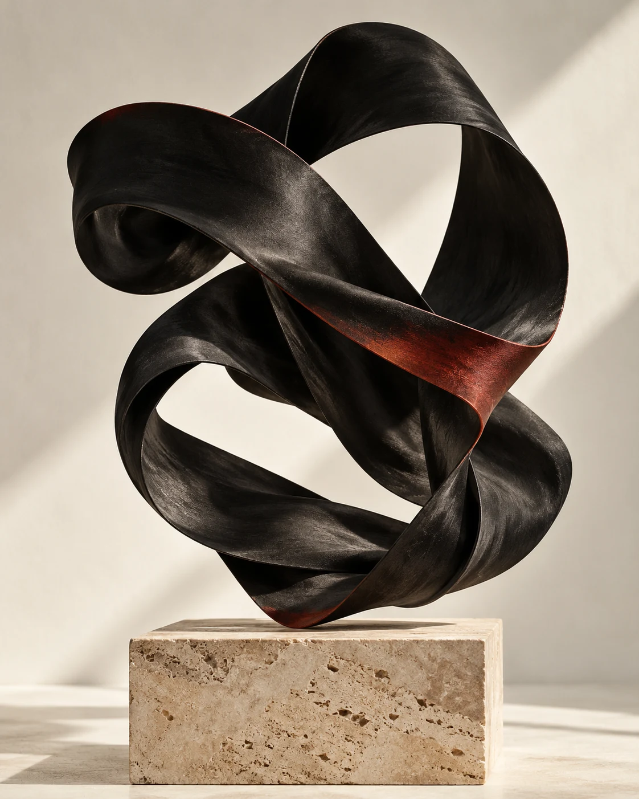

01HOSPITALITY / FULL STACK
Room for a
better experience.
Palacio de Mewic
A welcoming digital home for a lodge in Lilongwe. Room discovery, reservations, and the tools to manage what happens behind the scenes.
A WORK IN CONSTANT EVOLUTION
I turn curious ideas into
considered digital experiences.

01 / SELECTED WORK
A few things I’ve brought to life.
Each one, a new way of thinking.
Palacio de Mewic
A welcoming digital home for a lodge in Lilongwe. Room discovery, reservations, and the tools to manage what happens behind the scenes.
A responsive sports blog exploring racing, track, and the stories that move us.
Explore the source ↗An early student registration interface, exploring a digital starting point for Malawians abroad.
Explore the source ↗02 / THE PERSON BEHIND THE PIXELS
I’m Chisomo Blessings Moleni, a Malawian developer studying Computer Science with a focus on AI & Machine Learning at Chandigarh University.
I’m interested in the point where a useful idea becomes something you can actually use. That curiosity takes me from web interfaces to intelligent systems and connected hardware.
I care about the whole experience: how it works, how it feels, and the details that make it worth coming back to.
Have something in mind?Lilongwe, Malawi
Chandigarh University, India
Web development · AI / ML · IoT
Python / TypeScript / React / Next.js / Git
Make it useful.Make it thoughtful.Make it feel something.
03 / NEXT CONVERSATION
An idea, a collaboration,
or just a good conversation.